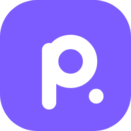

Própons IA
IA de estudos que roda no seu aparelho. Funciona offline.
versão mais recenteAndroid
Android 9+ · 64 bits- Toque em Baixar APK. Se o navegador avisar que o arquivo pode ser perigoso, toque em Baixar mesmo assim.
- Abra o arquivo pela notificação ou em Arquivos → Downloads.
- Se aparecer "instalação bloqueada", toque em Configurações, ative Permitir desta fonte, volte e toque em Instalar.
- Na primeira abertura a IA baixa o modelo (~0,5 a 1,2 GB). Use Wi-Fi; pode apagar a tela, o download continua.
iPhone / iPad
iOS 16+ · SideStore ou AltStoreNo SideStore ou AltStore, vá em Fontes → + e cole:
https://github.com/muurxdev/propons-ia/releases/latest/download/altstore-source.jsonWindows
Windows 10/11 · sem instalar- Abra o arquivo. Se o Windows avisar, toque em Mais informações → Executar assim mesmo. Funciona também direto do pendrive.
Linux
Ubuntu, Debian, Kali, Fedora, Arch…Cole no terminal:
curl -fsSL https://raw.githubusercontent.com/muurxdev/propons-ia/main/linux/install.sh | bash